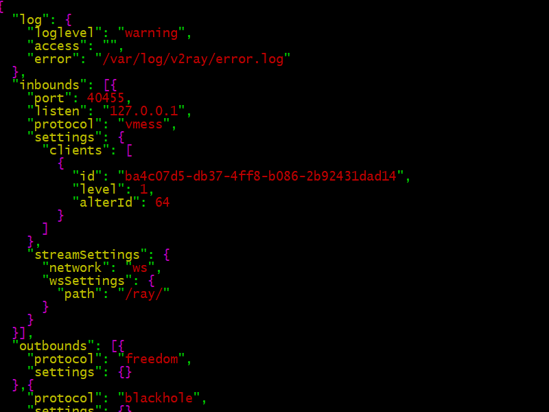
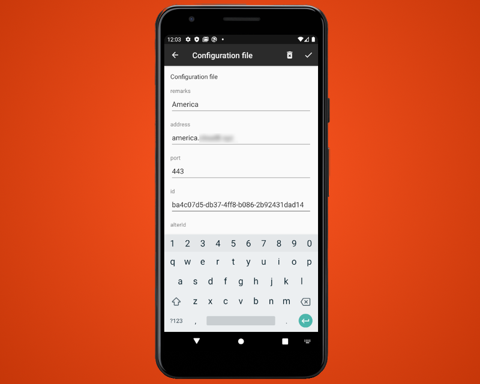

V2Ray on CentOS and Android Tutorial
V2Ray is a popular method of censorship circumvention. It has the capability to communicate using the HTTP-like WebSocket protocol. This assists in camouflaging the communication between your client and your server.
In this tutorial, you’ll see how to install V2Ray on a CentOS server and an Android client. The server is further protected by being behind a content distribution network (CDN). This arrangement is sometimes referred to by the shorthand notation “V2Ray+WS+TLS+CDN.”
CentOS is an unbranded recompilation of Red Hat Enterprise Linux, which in turn is based on Fedora after extensive testing. New releases of CentOS are issued approximately every five years, and at the time of writing the latest release is CentOS 8.
Android continues to be the most popular mobile operating system, running on around five out of every six mobile devices.
1. Preparation
Before you begin this tutorial, you will need five things:
- A domain name. Since the goal is to look as much like a real web server as possible, a paid domain name is better than a free domain name.
- A server. We will use a virtual private server (VPS). Censors often suspect that a VPS from a popular provider is being used for censorship circumvention. Vultr and Bandwagon Host are popular providers. Therefore it is best to obtain your VPS from a different provider.
- DNS records. At a minimum, you will need
a DNS
Arecord pointing from your hostname to your server. In this tutorial we useamerica.example.comas a sample hostname. - An account with a CDN. We will use the Cloudflare free service.
- An Android device. It is assumed that you own an Android phone or tablet.
2. Set Up Server
2.1. SSH as Root
Log in to your server using a tool such as PuTTY, XSHELL, or PowerShell (if you use Windows on your workstation), or the SSH command in a terminal emulator (if you use Linux or Mac on your workstation).
If your VPS provider sent you a root password by email, then change the root password to something only you know:
passwd root
If you do not know the root password, then SSH in as a non-root user, and set the root password:
sudo passwd root
If you logged in as a non-root user, then switch to the root user now:
su -
2.2. Update Server
Get your entire system up to date by issuing as root the command:
yum update
2.3. Install Enhanced Editor
Optionally install the enhanced editor:
yum install vim-enhanced
Map the vi command to vim:
alias vi=vim
Also edit /etc/profile and insert the same
command to apply automaticall to future logins:
alias vi=vim
Write the file to disk, and quit the editor.
2.4. Implement BBR Congestion Control
Bottleneck Bandwidth and Roundtrip propagation time (BBR) is a congestion control algorithm for Transmission Control Protocol (TCP). It aims to achieve higher bandwidths and lower latencies.
Create a new system control parameters file for BBR:
vi /etc/sysctl.d/50-bbr.conf
Insert the two lines that specify the BBR congestion control algorithm:
net.core.default_qdisc=fq
net.ipv4.tcp_congestion_control=bbr
Write the file to disk, and quit the editor. Activate these changes now:
sysctl -p /etc/sysctl.d/50-bbr.conf
2.5. Install Firewall
FirewallD may already be active (running) on your server. You can check this with the command:
systemctl status firewalld
If FirewallD is not active and running, then install and start it now:
yum install firewalld
systemctl enable firewalld
systemctl start firewalld
2.6. Configure Firewall
Now that FirewallD is active (running), use the trusted zone
to whitelist your own IP address for access to SSH. First add SSH to
the trusted zone:
firewall-cmd --permanent --zone=trusted --add-service=ssh
For the next step, you need to know your workstation’s Internet Protocol (IP) address. If you do not know your IP address, you can find it out by opening a browser and visiting https://www.ipip.net or https://whatismyipaddress.com.
Let’s assume your workstation’s IP address is
11.22.33.44. If that is realtively fixed, whitelist your
IP address for access to port 22,
which is the port you use for SSH:
firewall-cmd --permanent --zone=trusted --add-source=11.22.33.44/32
Alternatively, you can open port 22 for a range
of IP addresses. For example, if your ISP allocates addresses in the range
11.22.0.0 through 11.22.255.255, you could open
port 22 for the entire range like this:
firewall-cmd --permanent --zone=trusted --add-source=11.22.0.0/16
Do not open port 22 for the entire world.
Reload the firewall rules:
firewall-cmd --reload
Check that the results show your expected source
and services:
firewall-cmd --zone=trusted --list-all
We now prevent any other public IP addresses from reaching port 22
(the SSH port) by removing the ssh service from the
public zone:
firewall-cmd --permanent --zone=public --remove-service=ssh
firewall-cmd --reload
firewall-cmd --zone=public --list-all
Finally, we will open ports 80 and 443
to the public:
firewall-cmd --permanent --zone=public --add-service=http
firewall-cmd --permanent --zone=public --add-service=https
firewall-cmd --reload
firewall-cmd --zone=public --list-all
In some cloud providers, you must also open ports 22,
80, and 443 for input
in the VPS’s “Security Group.”
2.7. Install Apache
Now install the Apache web server:
yum install httpd
systemctl enable httpd
systemctl start httpd
2.8. Configure Apache
Create a directory for your Apache virtual host’s HTML:
mkdir -p /var/www/america.example.com/html
Create a configuration file for your Apache virtual host:
vi /etc/httpd/conf.d/america.example.com.conf
Insert your virtual host definition:
<VirtualHost *:80>
ServerName america.example.com
ServerAdmin your.email.id@example.com
DocumentRoot /var/www/america.example.com/html
<Directory /var/www/america.example.com/html>
AllowOverride All
</Directory>
</VirtualHost>
Write the file to disk, and quit the editor.
Restart the web server:
systemctl restart httpd
2.9. Add Website Content
Install some sample content on your website:
yum install wget zip unzip
wget https://github.com/arcdetri/sample-blog/archive/master.zip
unzip master.zip
cp -rf sample-blog-master/html/* /var/www/america.example.com/html/
2.10. Obtain Let’s Encrypt SSL Certificate
The Let’s Encrypt offers free SSL certificates. These allow your website to be served as HTTPS as well as, or instead of, HTTP.
Before you do this step, you need to check that your hostname DNS records have propagated, so that the hostname points to your server IP address:
yum install bind-utils
nslookup america.example.com 8.8.8.8
Assuming your server IP address is returned, you can now proceed. Download the Certbot client for Let’s Encrypt:
wget https://dl.eff.org/certbot-auto
Move Certbot into a directory in your execution path:
mv certbot-auto /usr/local/bin/certbot-auto
Make it executable:
chmod 755 /usr/local/bin/certbot-auto
Remove the dummy SSL parameters that come with Apache:
rm /etc/httpd/conf.d/ssl.conf
Run Certbot for Apache:
certbot-auto --apache
Certbot will download and install any extra packages it requires.
Respond to the Certbot prompts:
- Enter your email address
- Enter
afor agree - Enter
yornto share your email address - Select the appropriate number of your hostname that you require a certificate for
- Select
2for automatic redirect from HTTP to HTTPS
Let’s Encrypt SSL certificates are valid for 90 days. Set everything up for automatic renewal every 90 days:
echo "0 0,12 * * * root python3 -c 'import random; import time; time.sleep(random.random() * 3600)' && /usr/local/bin/certbot-auto renew" | tee -a /etc/crontab > /dev/null
2.11. Add Domain to CDN
Now you can add your domain to a Content Distribution Network (CDN).
We are using Cloudflare in this example.
Note that you need to add the domain as a whole (example.com),
not just your individual hostname (america.example.com)
to Cloudflare.
If you have not already done so, create your account with Cloudflare. Look for a verification email, and click the Verify email link.
When your account is verified, you can add your domain to Cloudflare. It will ask which plan you want for your domain. Select the Free plan, and click Confirm plan.
The existing DNS records are retrieved from your registrar. If Cloudflare does not find them automatically, you will need to add them manually. Click Continue.
Cloudflare displays your new nameservers. There are two of them.
They will look something like aaaaa.ns.cloudflare.com and
bbbbb.ns.cloudflare.com.
Copy the Cloudflare nameservers across to your registrar. Submit the changed nameservers to your registrar.
Back on the Cloudflare site, click the button saying you have changed your nameservers and they can now be checked. You will see a message telling you to wait a few hours until your changes have been successfully propagated and verified. According to a message on the Cloudflare site, it can take up to 24 hours.
Once you have the email saying your site is active on Cloudflare, log back into your Cloudflare account, and on the SSL/TLS tab set SSL/TLS encryption mode to Full.
2.12. Install V2Ray
To install V2Ray, download the V2Ray installation script:
wget https://install.direct/go.sh
Execute the V2Ray installation script:
bash go.sh
A default PORT and UUID are displayed toward the end of the install. The port number is needed by Apache. The UUID will need to be known by the client when you set it up. The values look something like this:
PORT:40455
UUID:ba4c07d5-db37-4ff8-b086-2b92431dad14
2.13. Configure V2Ray
Edit the V2Ray configuration file /etc/v2ray/config.json:
vi /etc/v2ray/config.json
Add error logging:
"log": {
"loglevel": "warning",
"access": "",
"error": "/var/log/v2ray/error.log"
},
In the inbound specification, after the port number line,
insert a new line to specify that V2Ray should listen only on localhost:
"listen": "127.0.0.1",
After the end of the existing inbound settings section:
- Add a comma after the closing curly brace
- Add a new section for
streamSettings
The streamSettings section should look like this.
It is best to replace ray by a directory name
of your own choice that only you know.
"streamSettings": {
"network": "ws",
"wsSettings": {
"path": "/ray/"
}
}
Here is a sample screenshot of the sections we have worked on:
Write the file to disk, and quit the editor.
2.14. Reconfigure Apache
Set the SELinux boolean to allow Apache to make network connections:
setsebool -P httpd_can_network_connect 1
Edit the SSL virtual host configuration file created by Certbot,
as usual replacing america.example.com by your actual hostname:
vi /etc/httpd/conf.d/america.example.com-le-ssl.conf
Insert a new <Location> block, as show in the model
below. Replace 40455 by the actual port number
generated during the V2Ray installation.
Replace ray by your actual choice of directory name.
<IfModule mod_ssl.c>
<VirtualHost *:443>
ServerName america.example.com
ServerAdmin your.email.id@example.com
DocumentRoot /var/www/america.example.com/html
<Directory /var/www/america.example.com/html>
AllowOverride All
</Directory>
SSLCertificateFile /etc/letsencrypt/live/america.example.com/fullchain.pem
SSLCertificateKeyFile /etc/letsencrypt/live/america.example.com/privkey.pem
Include /etc/letsencrypt/options-ssl-apache.conf
<Location "/ray/">
ProxyPass ws://127.0.0.1:40455/ray/ upgrade=WebSocket
ProxyAddHeaders Off
ProxyPreserveHost On
RequestHeader append X-Forwarded-For %{REMOTE_ADDR}s
</Location>
</VirtualHost>
</IfModule>
Write the file to disk, and quit the editor.
2.15. Restart Service
Start V2Ray with your revised configuration file:
systemctl start v2ray
Restart Apache with your revised configuration. This may take a few minutes to run:
systemctl restart httpd
12.16. Exit SSH Session
Your work on the server is done for now. Exit your SSH session by typing the command:
exit
3. Set Up Client
On Android devices, you can use V2RayNG or BifrostV for your client software. V2RayNG is available from Google Play and Github. BifrostV is available from Google Play and ApkPure. For the rest of this tutorial, we will use V2RayNG on our Android client device.
3.1. Install V2RayNG
Install V2RayNG from either Google Play or Github.
3.2. Configure V2RayNG
Add a new configuration to V2RayNG with settings that match
/etc/v2ray/config.json on your server:
- Remarks (for example)
America - Address (in our example)
america.example.com - Port
443 - Id (in our example)
ba4c07d5-db37-4ff8-b086-2b92431dad14 - AlterId
64 - Security
chacha20-poly1305 - Network
ws - Request Host (in our example)
america.example.com - Path (in our example)
/ray/ - TLS
tls
Press the check mark to save the configuration.
3.3. Connect
Press the V2RayNG icon at the bottom right to connect. The icon turns green.
3.4. Test
Test your entire configuration by opening a browser on your Android device and visiting https://ipchicken.com.
You should see your server IP address, not your client IP address.
3.5. Disconnect
Press the V2RayNG icon at the bottom right to disconnect. The icon turns gray.
4. Troubleshoot Issues
The V2Ray manual is online at https://v2ray.com.
If you have any problems, here are some steps you can take to troubleshoot.
Firstly, double-check that your client configuration file is an exact match for the settings on your server.
On the server, you can look at the status of the Apache and V2Ray services:
systemctl status httpd
systemctl status v2ray
You can query the contents of the systemd journal, as written by systemd-journald.service:
journalctl -xe
journalctl -u httpd
journalctl -u v2ray
You can look at the logs:
tail /var/log/messages
tail /var/log/httpd/error_log
tail /var/log/v2ray/error.log
You can also look at the logs on the client.
Enter any messages you find into a search engine, to see if anyone has had the message before.
If you are still stuck, you can ask for help on the Telegram Messenger groups Project V2Ray and V2RayN&G.
You can report issues on Github: